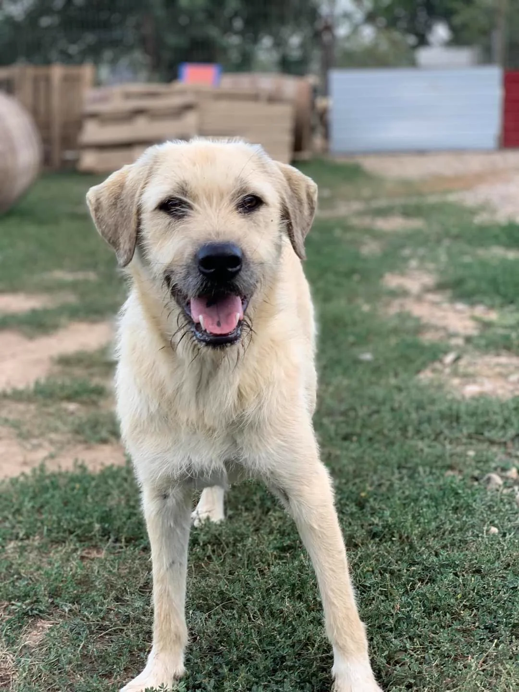
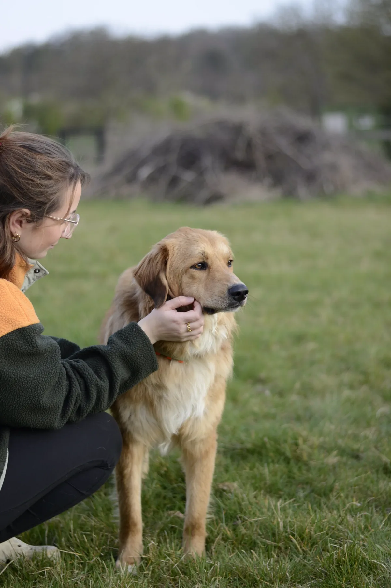
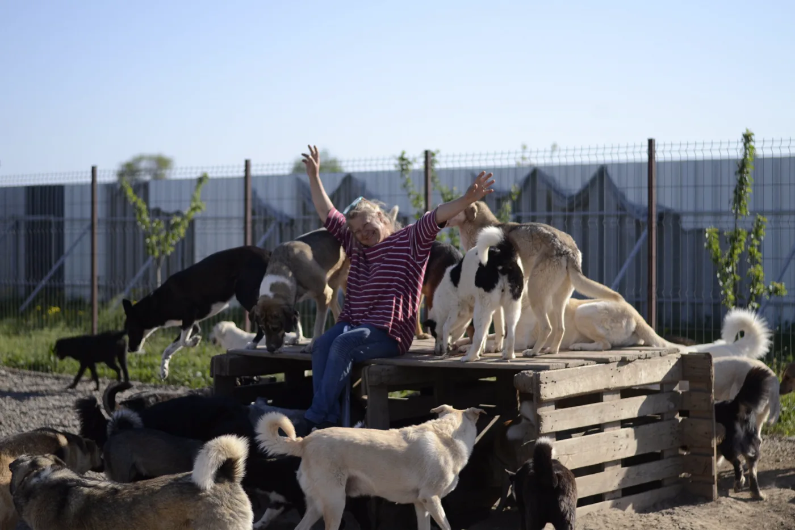

Europe4strays × Tierschutzgruppe Herzensmenschen
How to adopt
Adopting one of Mirela's dogs runs through our German partner association, Tierschutzgruppe Herzensmenschen. They bring the dogs to foster homes in Germany, where you can meet them in person before they move in with you.
Who they are
Tierschutzgruppe Herzensmenschen is a German animal welfare group dedicated to sustainable animal protection in Romania: castration campaigns, education work and reliable structures on the ground. Together with their local partners they care for around 400 dogs and cats.
Their dogs are placed exclusively through foster homes in Germany. The animals have time to arrive and settle, you can get to know them properly, and each one finds a home that truly fits, for a whole dog's life.


Photos: Tierschutzgruppe Herzensmenschen
Follow their work
The practical part
Adopting is a long-term commitment, and it starts with a form and a phone call. A home check is done by the nearest Europe4strays member, then your dog is prepared: vaccinated, chipped, sterilized, passported.
Preparation is around 100 EUR, transport between 150 and 300 EUR depending on your country.

Photo: Tierschutzgruppe Herzensmenschen
Questions about a particular dog? Write to Mirela